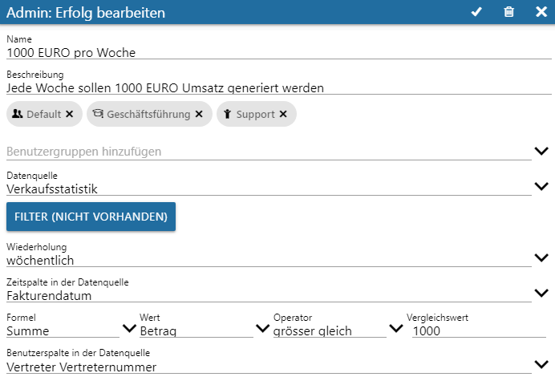
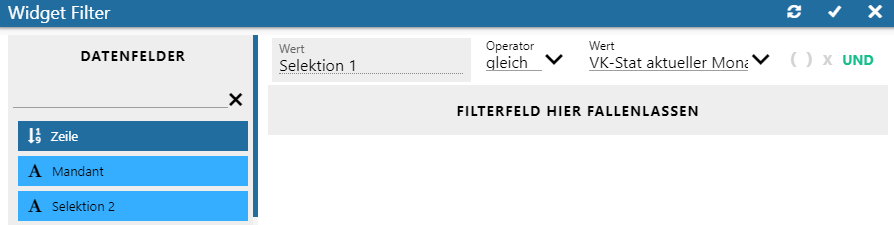
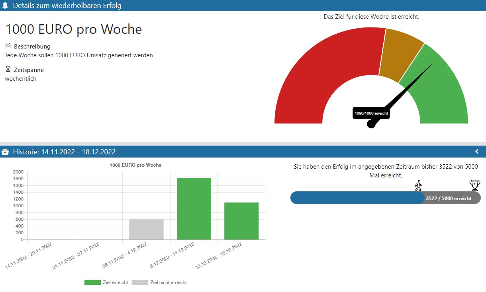

Nachfolgend wird (aufbauend auf die zuvor eingerichteten Benutzer/Vertreter) ein wiederholbarer Erfolg konfiguriert. Als Basis hierfür gilt eine Verkaufsstatistik-Datenquelle, welche entsprechende Zeitintervalle beinhaltet (wöchentlich werden die Vertreterumsätze geprüft).
Wiederholbare Erfolge können dazu eingesetzt werden, Ziele über einen längeren Zeitraum zu verfolgen. Über das betrachtende Zeitfenster wird das Erreichen von Zielen wird immer einem bestimmten Zeitraum zugeordnet.
Der Vertreter soll hierbei beispielsweise dazu motiviert werden, jede Woche mindestens 1.000 € Umsatz zu generieren. Auch hier bedarf es einer Benutzerreferenz, worüber zwischen der Datenquelle (Vertreterangaben) und dem angemeldeten WinLine Benutzer die Verknüpfung hergestellt wird.
Ausgehend davon werden wiederholbare Erfolge über die
1 WinLine INFO
1 SMART
1 SCORE
aus dem Menüpunkt
1 Admin
1 Wiederholbare Erfolge verwalten
definiert.
Wird die bezugnehmende Datenquelle in weiterer Folge aktualisiert, so aktualisieren sich automatisch alle weiteren damit verknüpfte SMART SCORE Elemente.
In der Kopfleiste "Admin: Wiederholbare Erfolge" wird über das "+"-Icon mit der Erstellung begonnen:

Ø Name und Beschreibung
Hier vergebene Namen und Beschreibungen stellen den wiederholbaren Erfolg nach außen dar und sollten eindeutig und bezugnehmend vergeben werden.
Ø Benutzer hinzufügen
Benutzer/-Gruppen, die als Teilnehmer mitwirken sollen, werden definiert.
Ø Datenquelle
Aus der (über das rechte Icon aufrufbaren) Auswahl muss die bezugnehmende Datenquelle selektiert werden.
Ø Button "Filter (nicht vorhanden)"
Optional kann das Filtern weiterer Einschränkungen vorgenommen werden.
Hinweis:
Existieren mehrere Datenquellen eines Ursprungs (z. B. Verkaufsstatistik), so müssen diese im Filter des Elementes auf Ebene des Snapshots gezielt herausgefiltert werden.

Definition der Regel eines wiederholbaren Erfolgs
In den folgenden Feldern wird festgelegt, wie die Regel die Punkte berechnen soll.
Ø Formel
Hier wird die Formel eingetragen, die für die Erfolgsregel herangezogen werden soll.
Ø Wert
Hier wird Wert der Datenquelle ausgewählt, auf deren Basis die Punkte berechnet werden sollen.
Ø Operator
Der Vergleichsoperator, der für die Erfolgsregel verwendet werden soll, wird hier eingetragen.
Ø Vergleichswert
Der Wert, mit dem das Measure/der Wert über den Vergleichsoperator verglichen werden soll, wird hier eingetragen.
Ø Wiederholung
Es kann aus folgenden Intervallarten gewählt werden:
ü täglich
ü wöchentlich
ü monatlich
Ø Zeitspalte in der Datenquelle
Bezugnehmend zur Aufgabenstellung wird aus der vorhandenen Datenquelle das Fakturendatum angeboten.
Ø Benutzerspalte in der Datenquelle (in Abhängigkeit der selektierten Datenquelle)
Diese Selektionsauswahl bietet alle Spalten einer Datenquelle zur Auswahl, welche eine mögliche Referenz auf den WinLine-Benutzer beinhalten. (vgl. o. a. Hinweis zur Datenquelle). Dabei kann es sich um folgende Objekte handeln:
ü Mitarbeiter
ü Vertreter
ü Benutzer
Diese getätigten Einträge werden in Folge als Grundlage für die Punkteberechnung herangezogen.
Nach dem Bestätigen erscheint der angelegte wiederholbare Erfolg in der Admin-Übersicht für wiederholbare Erfolge und kann bei Bedarf über das Selektieren der Elemente-Kachel bearbeitet werden.
Darstellung der wiederholbaren Erfolge
Ø SCORE Übersicht
In Dieser Übersicht wird der wiederholbare Erfolg in der entsprechenden Sektion des Bildschirms abgebildet.
Durch das Selektieren der Kachel erfolgt das Abbilden der…
Ø Details zum wiederholbaren Erfolg
